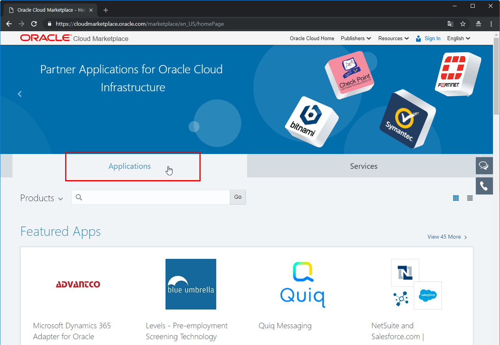
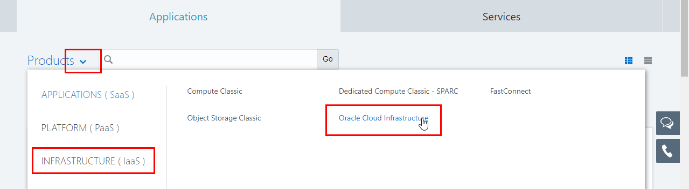
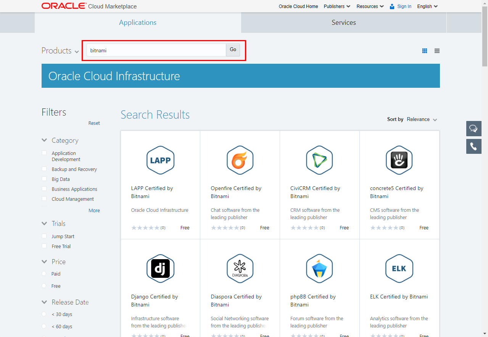

9.2 Oracle Cloud Marketplace
Oracle Cloud에서는 클라우드 관련된 이미지, 응용프로그램, 서비스 등을 사고팔 수 있는 Cloud Marketplace를 제공하고 있습니다. Oracle Cloud 홈페이지에서 링크를 타고 가거나 다음 주소로 직접 이동할 수 있습니다.
Cloud Market에 접속하면 크게 응용프로그램, 서비스 영역이 있습니다. 이미지를 검색하기 위해 왼쪽 Applications를 클릭합니다.

Oracle Cloud의 전체 서비스에서 제공하는 응용프로그램이 모두 있기 때문에 항목이 아주 많습니다. 이미지를 검색하기 위해 Products 오른쪽 문자 클릭 > INFRASTRUCTURE 클릭 > Oracle Cloud Infrastructure를 순서대로 클릭합니다.

OCI 사용할 수 있는 많은 응용프로그램이 보입니다. 가장 많은 이미지를 제공하고 있는 bitnami로 검색합니다. 작성일자 기준으로 125개의 많은 이미지가 검색됩니다.

** 이 글은 개인으로서, 개인의 시간을 할애하여 작성된 글입니다. 글의 내용에 오류가 있을 수 있으며, 글 속의 의견은 개인적인 의견입니다. **